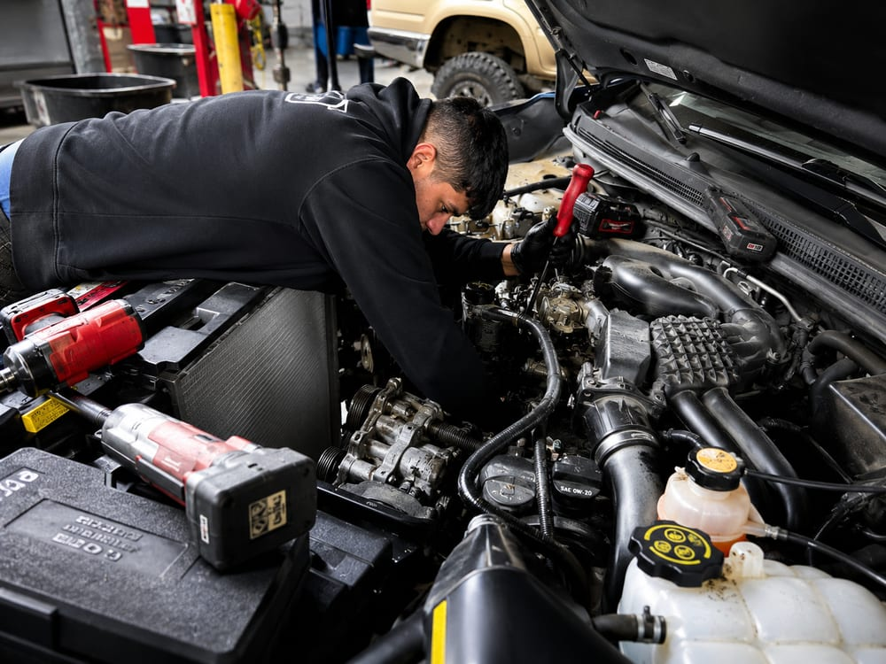

Our car diagnostics go beyond pulling a code. We trace check engine lights and electrical gremlins to the actual failed component, so you only pay to fix what's broken.

Since roughly 2010, cars stopped being mechanical machines with a computer attached and became networks of computers with an engine attached. The engine computer (ECU) talks to the body control module, which talks to dozens of other modules over the vehicle's CAN bus network. When one module stops communicating, it can knock out communication with everything behind it. It's not like the old days of changing the spark plugs, adding fuel, and knowing it'll run.
Diagnosing that takes more than a code reader. It takes knowing how these networks are supposed to talk, and where they break.
One failure we see constantly out here: rodent-chewed wiring. Many newer vehicles use soy-based wire insulation, and mice and rats genuinely eat it. If your car developed bizarre electrical symptoms overnight, especially after sitting, chewed wiring is a prime suspect. We repair it properly with correct splices and protection.
Every diagnosis here follows the same discipline: confirm before replacing.
A code tells you which system complained, not which part failed. An oxygen sensor code is often caused by a vacuum leak, not the sensor. Pinpoint testing is the difference between fixing the car and throwing parts at it.
A customer's 2022 Kia minivan came in with a check engine light. Instead of swapping the cheapest part the code hinted at, we ran the diagnostics and confirmed the real cause: the fuel injectors weren't firing properly. We quoted the job, the customer approved it, and we installed a full set of new injectors along with a new intake manifold gasket while the intake was apart, so the same labor wouldn't need to be paid twice later.
Light off, problem actually solved, no parts guessed at. That's what a diagnostic fee buys you.
Full computer scan plus live-data and pinpoint testing to confirm the actual failed part.
Wiring, grounds, shorts, module faults, and rodent damage traced with proper schematics, not guesswork.
CAN bus communication problems and dead modules diagnosed with dealer-level scan tools.
Oxygen, cam, crank, MAF, and other sensors replaced only after they're confirmed bad.
Stalls, misfires, hesitation, and intermittent problems that other shops gave up on.
Buying a used car? We'll scan and inspect it before you sign anything.
The free scan reads the code; the diagnostic finds the cause. Replacing parts by code alone is how people spend $400 on sensors for a $20 vacuum leak. Our diagnostic fee covers actual testing, and we apply it toward the repair.
A steady light won't strand you today, but it can hide a problem quietly damaging your catalytic converter or fuel economy, and it blocks a DEQ pass. A flashing light means active misfire: get it checked immediately.
Warning lights or dead systems that appear suddenly after the car sits, especially in fall and winter, are the classic sign. You may also find droppings or nesting material under the hood. Don't keep driving on chewed wiring, because shorts can take out expensive modules.
We charge a flat diagnostic fee and quote it up front. If you have us do the repair, the diagnostic time is applied to the job.
Bring us the mystery light, and we'll bring you the actual answer.
Call (503) 867-0609